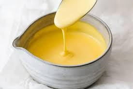

Back to menu
Hollandaise Sauce

Description
A hollandaise sauce might seem like a complicated affair, but using a blender makes it really easy!
I'll be using a hand blender, but you could just as easily use a regular blender!
Ingredients
- 250g butter
- 3 Egg yolks
- Lemon juice (alternatively white wine vinegar)
- Dijon Mustard
- Salt
Steps
- Melt the butter in a pan over low to medium heat. Make sure it doesn't go brown
- Add 3 egg yolks, a teaspoon of dijon mustard and a teaspoon of lemon juice (or vinegar) to your blender (or blender cup)
- Blend the contents together for 20-30 seconds
- While the blender is running, SLOWLY pour the melted butter in. If you pour too fast, the eggs will scramble and the emulsion might break
- When desired thickness has been reached, add a pinch of salt to taste
- Enjoy?